ЛАБОРАТОРНО-ПРАКТИЧНА РОБОТА
Тема: «Ажурна вишивка»
Мета: засвоєння техніки ажурної вишивки; формування вмінь виконувати ажурні шви; виховувати уважність, охайність.
Матеріали та інструменти: тканина, нитки, голки, ножиці, наперсток, п’яльця.
Порядок виконання роботи:
- Ознайомитись з теоретичними відомостями практичної роботи.
- Підібрати тканину, голки та нитки для роботи.
- Згідно з технологічними вимогами виконати на зразку мережку одинарний та подвійний прутик.
Теоретичні відомості:
Ажурні, або прозорі шви у народному вишиванні завжди були досить популярними. До них належать мережки, сітки з обкруткою, вирізування, зерновий вивід. Виконують такі шви на розрідженій тканині, висмикнутих доріжках та стягуванням тканини робочою ниткою.
Мережки.Мережкою називають ажурну вишивку на смузі тканини, з якої висмикнуто нитки лише в одному напрямку – основи або піткання. Нитки, які залишилися невитягнутими, з’єднують тим чи іншим способом робочою ниткою в пучки, утворюючи різні узори.
Мережки бувають найрізноманітнішими – від вузеньких смужок одинарного прутика до складних, білих мережок завширшки до 1 м, дуже подібних до справжнього мережива.
Шириною мережки називають ширину витягнутої смужки тканини в простих мережках. Ширина складних і комбінованих мережок, які включають кілька видів простих і складних, складається з витягнутих смужок тканини та чисниць – смужок цілої тканини між ними.
Мережками прикрашають білизну, одяг, скатерті, рушники, використовують для з’єднання окремих частин виробів. Виконують мережку переважно білими нитками або в тон тканини, а в окремих районах – і кольоровими. Для мережок використовують тканину полотняного переплетення – лляну, бавовняну тощо; нитки – муліне та котушкові: № 40 і 50 – для полотна, № 60 і 80 – для тонких тканин, таких як батист, маркізет, крепдешин, марльовка.
Найпростіші у виконанні мережки – одинарний, подвійний і роздільний прутики, жучок, панка, снопики.
До початку роботи на тканині слід позначити місце і розмір мережки. Якщо для мережки потрібно висмикнути з тканини дві або три нитки, то їх підрізують біля початку та закінчення мережки ножицями з тонкими і гострими кінцями або лезом, піднявши нитки на голку (рис. 75). Кінці, що залишилися від витягнутих ниток, загинають на виворітний бік і пришивають закріпкою.
Для мережок із більшою кількістю витягнутих ниток спочатку, визначивши довжину мережок, нашивають з двох боків закріпки стібками гладі чи обміткою на двох-трьох вертикальних нитках тканини, а потім підрізують і витягують нитки.
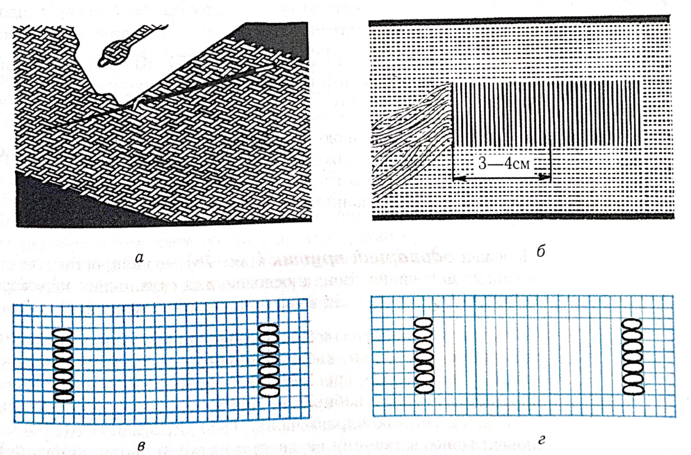
Рис. 75.Підготовка тканини для мережок:
а - надрізування нитки; 6 - витягування нитки; в, г - закріпки
Мережка одинарний прутик (рис. 76) – найпростіша за технікою виконання. Вона є основою для складніших мережок. Викопують и за один хід зліва направо або справа наліво.
Спочатку з тканини, залежно від її товщини й щільності та призначення мережки, витягують одну-п’ять ниток. Закріплюють робочу нитку (рис. 76, а) і переходять до виконання прутиків. На голку набирають три-чотири нитки й обплітають їх робочою ниткою справа наліво (або зліва направо). Вколюючи голку в тканину па дві-три нитки зі споду, виводять її на лицьовий бік справа (або зліва) від обкрученого прутика.
Знову набирають новин пучок ниток і обплітають їх ниткою. Так роблять усі наступні прутики мережки (рис. 76, б, в). На зворотному боці під кожним прутиком утворюється діагональний стібок.
Мережкою одинарний прутик підшивають краї вишитих виробів або поєднують її з іншими мережками.
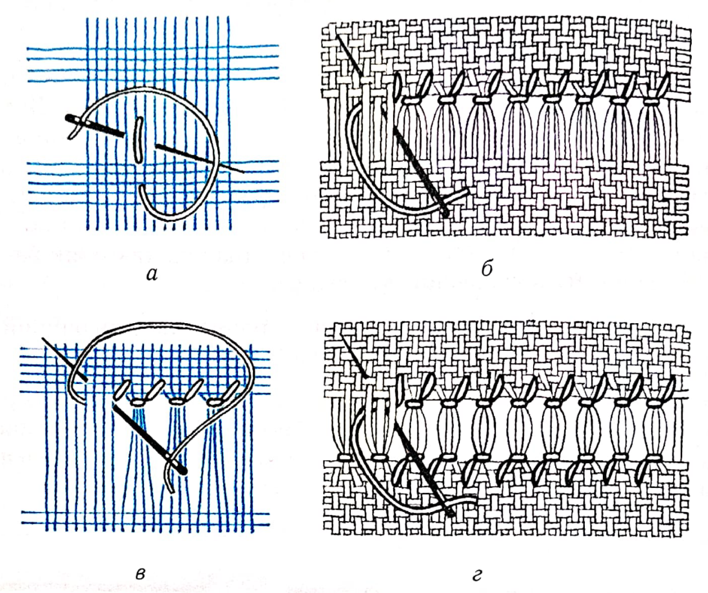
Рис. 76.Прутик: а - закріплення нитки;
б,в – одинарний прутик; г - подвійний прутик
Мережку подвійний прутик (рис. 76, г) викопують за два ходи. Спочатку обметують петельним швом або гладдьовим шнурочком закріпки – місця початку та закінчення мережки. Потім підрізають та витягують три і більше ниток тканини й роблять зверху або знизу мережку одинарний прутик. За другим ходом ці самі прутики обплітають робочою ниткою з протилежного боку витягнутої смужки тканини.
Роздільний прутик, або черв’ячок (рис. 77, а), – це різновид подвійного прутика. Спочатку шиють одинарний прутик, але обов’язково для прутика беруть парну кількість ниток. Шиючи протилежний ряд прутика, робочою ниткою стягують по половині ниток двох сусідніх прутиків, тобто розділяють їх навпіл, унаслідок чого утворюється зиґзаґ, який називають черв'ячком. Ним прикрашають узори для жіночих блузок, суконь, застосовують для підрублювання серветок, скатерок.
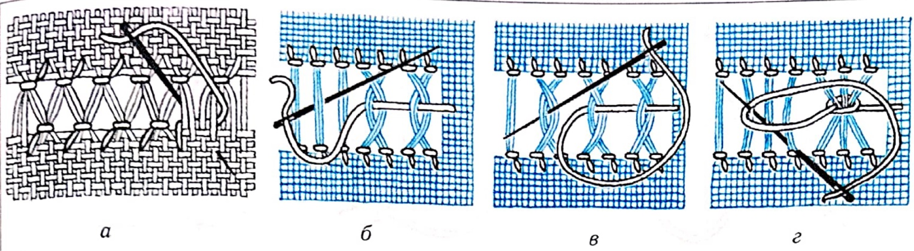
Рис. 77.Мережки: а - роздільний прутик, або черв’ячок;
6, в - схрещений прутик; г – жучок
Мережка схрещений прутик із центральною ниткою (рис. 77, б, в) також належить до простих мережок. Виконують її на основі подвійного прутика завширшки 1 см і більше. Потім закріплюють нитку на середині правої закріпки і схрещують по два прутики. Для цього заводять голку за другий прутик зліва, вістрям голки перший прутик переміщають наліво на місце другого і нитку протягують.
Мережка жучок із центральною ниткою (рис. 77, г) має таку саму ширину, як і попередня. Виконують подвійний прутик. Потім закріплюють робочу нитку на середині правої закріпки і стягують по три прутики петлею, яку кладуть на них проти годинникової стрілки або за її ходом, а голку заводять під прутиками і виколюють у петлю.
Мережку панка (рис. 78) можна застосовувати як самостійно, так і у багаторядних мережках. Наприклад, у мережках із чисницею папкою обшивають чисницю. Щоб виконати цю мережку, витягують одну-дві нитки, залишають по вертикалі три-чотири питки і знову витягують одну-дві нитки. На невитягнутій смужці тканини одночасно з двох сторін виконують панку. Починають з нижньої правої точки цієї смужки (рис. 78, а), роблять стібок 1–2, голку з вивороту виколюють по діагоналі вліво вниз, відділяючи три-чотири нитки. Горизонтальним стібком 3–1 (рис. 78, б) ці нитки стягують, голку виколюють по діагоналі вліво вгору і стягують нитки стібком 5–6 (рис. 78, в), виколюючи голку в точку 3, щоб формувати наступний квадратик. З вивороту при цьому утворюється хрестик. Панку можна шити також зліва направо (рис. 78, г).
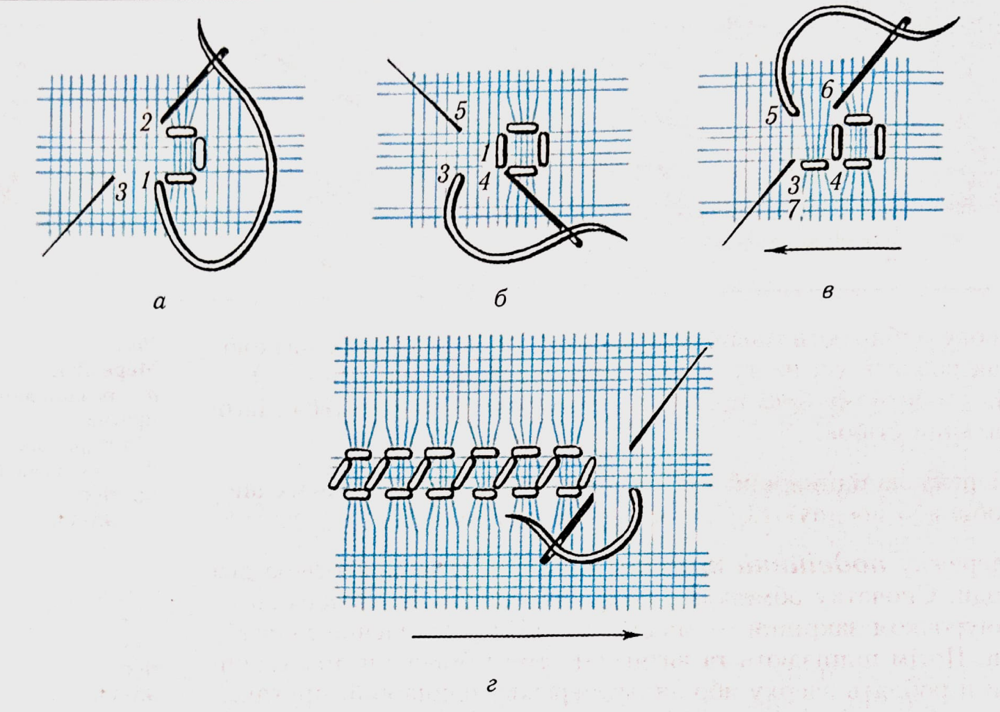
Мережка настилом (рис. 79) поширена в багатьох регіонах України і має багато різновидів. Вона може бути безчисна і з чисницею. В усіх цих мережках настил виконують штопанням або уприкріп.
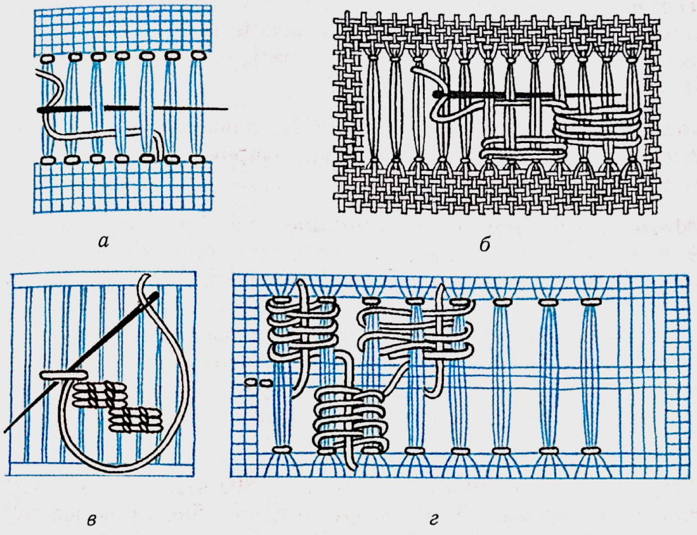
Рис. 79.Мережка настилом: а, б - штопанням;
в - уприкріп; г - з чисницею
Щоб виконати безчисну мережку підрізають потрібну кількість ниток, витягують одну-дві нитки для верхнього і нижнього прутиків, шиють подвійний прутик. Потім витягують нитки посередині, але не на всю довжину, а поступово – на рапорт узору або трохи більше. Цю мережку краще виконувати у п’яльцях, щоб вона не стягувалася, а голку треба брати з тупим кінцем або тримати її вушком наперед.
На прутиках роблять настил штопанням (рис. 79, а, б), тому подекуди цю мережку називають латаною. Горизонтальні стібки кладуть щільно, не стягуючи прутики.
Настил уприкріп (рис. 79, в) виконують робочою ниткою, яку накладають горизонтальними рядами вільно поверх прутиків і закріплюють їх при зворотному ході голки дрібними поперечними стійками.
Безчисна мережка характерна для Полтавщини і гарно поєднується з іншими видами вишивки, наприклад із набируванням, косою гладдю.
Мережка настилом з чисницею (рис. 79, г) складається з двох наскрізних смужок, які розділені доріжкою цілої тканини. Для цієї мережки спочатку витягують шість ниток тканини, залишають дві-три і знову витягують шість ниток. Краї мережки закріплюють одинарними прутиками так, щоб утворилися подвійні прутики. Потім вишивають настил штопальним швом знизу вгору до середини мережки. Перехід роблять вертикальними стібками, які потім зашивають настилом, і вони стають непомітними.
Мережка одинарна ляхівка (рис. 80) належить до складних мережок. Застосовують її самостійно та як доповнення до інших швів. Складається одинарна ляхівка з трьох рядів: нижнього, середнього та верхнього.
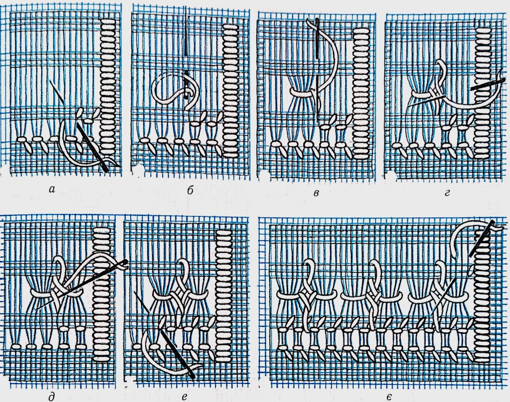
Рис. 80.Мережка ляхівка
Для виготовлення ляхівки із тканини витягують три ряди ниток: чотири-п’ять ниток для першої смужки, залишають три нитки на чисницю, витягують вісім-десять ниток для основної смуги мережки, знову залишають три нитки на чисницю і витягують чотири-п’ять ниток для третьої смуги.
Зверху й знизу ляхівку обробляють одинарним прутиком. Потім панкою вишивають нижню чисницю і переходять на верхню. Одночасно цією самою ниткою виконують середню частину мережки, тобто роблять павутинки з повітряних петель, обплітаючи робочою ниткою два-три прутики спочатку зліва (рис. 80, а, б), потім верхню чисницю, два-три прутики справа і нижню чисницю (рис. 80, в-е). Так само роблять другу та всі наступні петельки павутинки (рис. 80, є).
Цю ошатну мережку, вишиту в один або кілька рядів на полотні або тонких тканинах, застосовують для прикрашання блузок, суконь, серветок. Поєднують її з лічильною гладдю, штапівкою, хрестиком та іншими швами.
Декоративна мережка квадратикова (рис. 81) утворюється з однотонних або кольорових квадратиків унаслідок виконання одинарного прутика особливим прийомом.
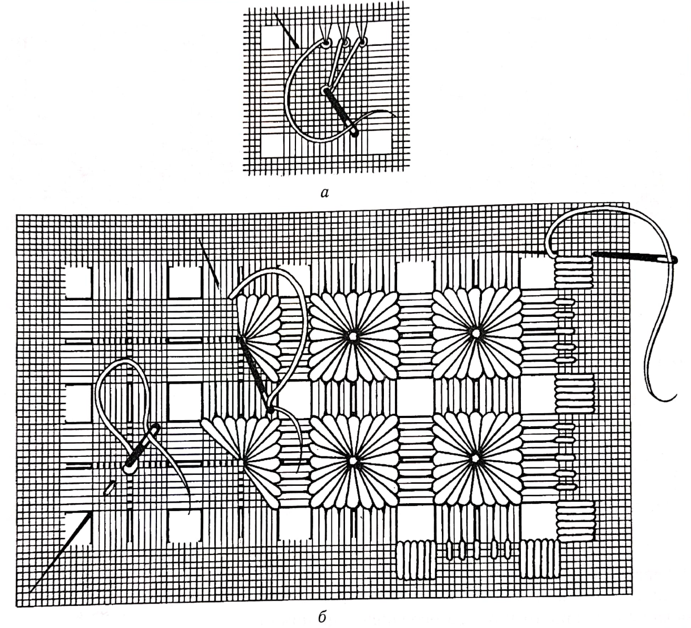
Рис. 81.Мережка квадратикова
Вишивають на тканинах полотняного переплетення з витягнутими нитками – позначками квадратів. На підготовленій сітці закріплюють нитку в квадраті з тканини і виколюють голку в центрі (рис. 81, а). Можна визначити центр квадрата, витягнувши додатково нитки (рис. 81, б). Потім виконують одинарні прутики, протягуючи кожен раз зі споду робочу нитку з центра на край квадрата через чотири нитки на тонкій тканині та через дві-три нитки – на щільній тканині. Обплітають їх з лиця вколюють голку в дірочку – центр квадрата. Так виконують усі сторони квадрата і переводять нитку в наступний квадрат по основі сітки з вивороту або закріплюють робочу нитку під стібками зворотного боку вишивки.
Нитки для вишивання мережки краще брати м’які, слабкого кручення відповідно до товщини тканини. Таку мережку можна вишити нитками одного, двох кольорів або в чотири тони одного кольору. Для цього вишивають спочатку половинку або чверть квадратика ниткою одного кольору, роблячи переходи зі споду, а потім нитками іншого кольору або відтінку вишивають решту площини.
Сітки з пруткуванням і настилом. Сіткою називають мережку з витягнутими поздовжніми й поперечними нитками. Нитки тканини, які залишилися, обплітають робочою ниткою і використовують для вишивання різними прийомами та розшивками. Сітки можна витягувати будь-яких форми та розміру.
Ажурну сітку (рис. 82) починають із визначення її форми на тканині. Якщо вона прямокутна, то намічають і підрізають по одній нитці в кутах і голкою витягують їх. По витягнутих нитках кольоровою ниткою швом уперед голку вздовж контуру за рахунком набирають нитки тканини для сітки. Наприклад, чотири нитки набирають, а чотири – пропускають, але при цьому слід пам’ятати, що основа тканини завжди тонша, ніж піткання. Щоб сітка була рівною, треба витягувати більше тонких ниток. Якщо сітка іншої форми, то обшивають її контури і намічають нитки для неї.
Заправляють тканину в п’яльці й обшивають проміжки, які підлягають витягуванню, по контуру сітки качалочковою гладдю (краще робити це по попередньо прокладеному настилу стібками шва вперед голку) (рис. 82, а, б). Усі нитки тканини, підняті на кольорову нитку, підрізують з обох боків і витягують, спочатку середню нитку, а потім бокові – справа та зліва.
Нитки сітки обплітають, починаючи з кута (по діагоналі): то горизонтальну, то вертикальну (рис. 82, в, г). Готову сітку прикрашають розшивками: настилом, штопанням, павутинкою (рис. 83).
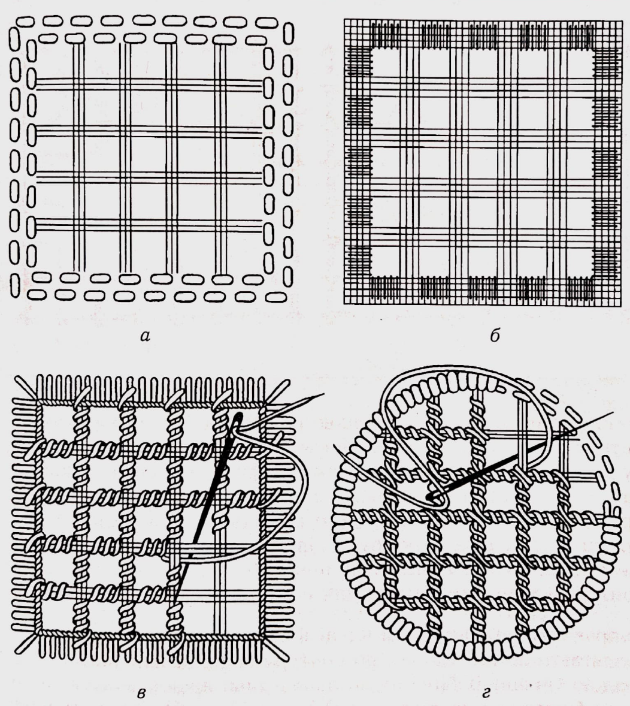
Рис. 82.Ажурна сітка
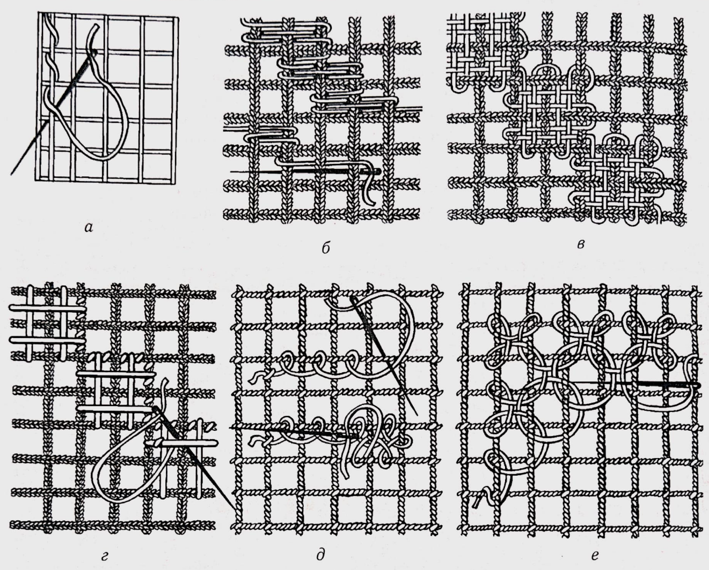
Рис. 83.Різновиди ажурної сітки
Вирізування –це вид ажурної вишивки, в якому спочатку обробляють контури узору, потім витягують і обрізують потрібну кількість ниток, а по тих нитках, що залишилися, роблять сітку й прикрашають різними розшивками. На Волині вишивка має назву ризъ, на Покутті – біле шиття.
Вирізування поширене у вишивках багатьох народів у поєднанні з іншими лічильними швами: гладдю, мережкою, кіскою, виколюванням тощо. Вишивають найчастіше білим по білому, білим по сірому, червоним по білому, у поєднанні червоного з чорним, жовтим, сивим, коричневим, що властиво місцевому колориту того чи іншого регіону.
У вирізуванні (рис. 84) поєднують кілька технік лічильних швів: хрестик для позначення кутів фігури (у полтавському вирізуванні), обметування країв гладдю, обплітання сітки та розшивка окремих клітинок.
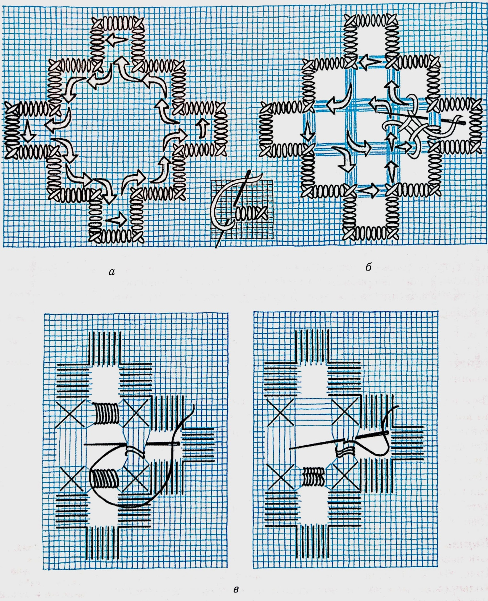
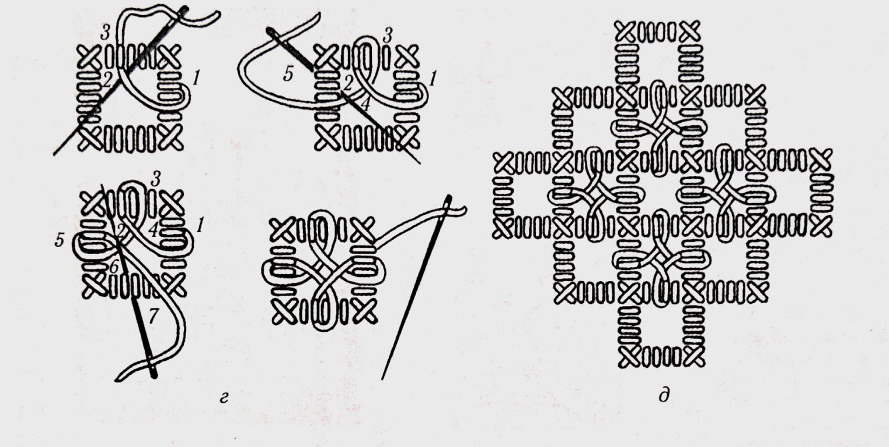
Рис. 84.Шов вирізування
Перенесений на тканину за рахунком ниток узор обшивають по контуру гладдю з хрестиком на кутах (рис. 84, а) з урахуванням ниток для вирізування. Потім нитки, призначені для вирізування, підрізують з двох боків і витягують по вертикалі та горизонталі. Залишені нитки обплітають, як звичайну сітку, стільки разів, щоб не просвічувалися нитки тканини (рис. 84, б, в). При обплітанні сітки одночасно роблять у деяких клітинках павутинки з повітряних петель (рис. 84, б, г, д).
Вирізи (рис. 85), в яких обшивають тільки контур і вирізують невеличкі частини тканини, – прості й красиві оздоби (рис. 85, а, б). Якщо тканину не вирізують, а тло зашивають кольоровою ниткою, то шов називають обманом, або обманкою (рис. 85, в).
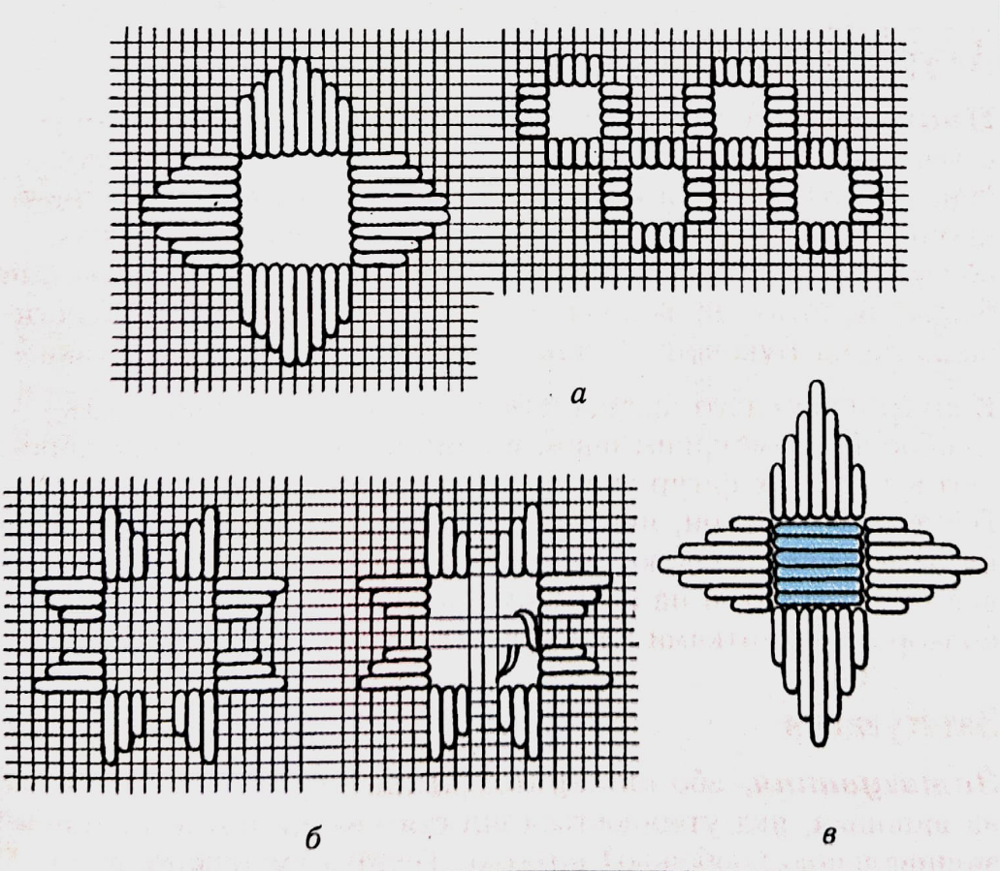
Рис. 85.Шов вирізи: а - з вирізуванням тканини; б - з обплітанням сітки; в – обманка
Ажурна вишивка цирка. Цирка поєднує в собі наскрізний і глухий шви та виконується за рахунком або по нанесеному на тканину рисунку (рис. 86, а). Техніка виконання цирки характерна для північних областей Росії, Молдови та Буковини (Чернівецька область). Такими вишивками, виконаними білими нитками по білому полотну, прикрашали рушники, облямівку до простирадла, а на Буковині – жіночі й чоловічі сорочки, блузки.
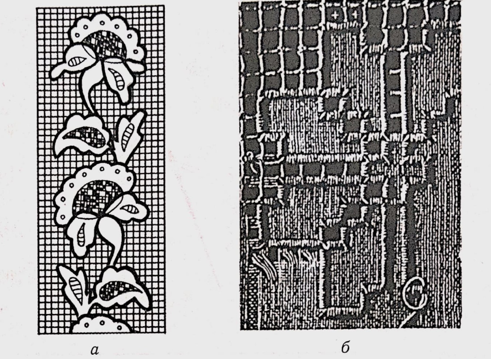
Рис. 86.Мережка цирка:а –обшивання контурів вільного узору;
б – обшивання контурів узору за рахунком
Контур нанесеного на тканину вільного узору обшивають гладдю або тамбурним швом в один чи два ряди. Серединки квітів та інших фігур заповнюють різними сітками, гладдю. Геометричні фігури, які виконують за рахунком ниток тканини, обшивають гладдю. За межами контурів узору з тканини висмикують нитки на сітку, яку потім обплітають білими або кольоровими нитками (рис. 86, б).
Затягування,або стягувальні шви (рис. 87), – ажурна вишивка, яка утворюється від стягування ниток тканини вишивальною (робочою) ниткою. Техніка виконання цього шва оригінальна тим, що без проколювання, вирізування й витягування із тканини ниток утворюється прозора вишивка.
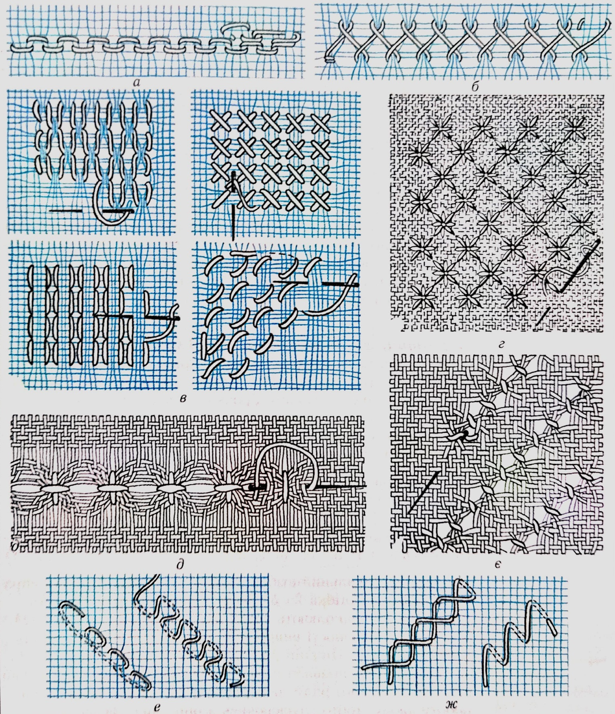
Рис. 87.Різновиди стягувальних швів
Стягування виконують за рахунком ниток на тканинах з рідким полотняним переплетенням нитками білого, сірого кольорів або в тон тканини. Затягувати тканину можна у горизонтальному, вертикальному та діагональному напрямках за один і два ходи (рис. 87, а–г, є–ж). Щоб полегшити роботу на цупких тканинах, можна витягнути нитку (рис. 87, д).
Для українських народних вишивок характерні стягувальні шви у вигляді діагональних смужок із невеликих квадратиків-очок, виконаних за два ходи: з верхнього і нижнього рядів зиґзаґів у вигляді східців із подвійних вертикальних і горизонтальних стібків. Цей шов надає вишивці легкості й підкреслює композицію узору, доповнює такі шви, як лиштва, вирізування, виколювання, хрестик при оздобленні жіночих і чоловічих сорочок, суконь, блузок і речей домашнього вжитку.
Зерновий, або дірочковий , вивід (рис. 88) – це ажурний скісний шов. Шиють стібки на трьох-чотирьох нитках, залежно від ґатунку тканини. Кожен стібок роблять, вколюючи голку в одні й ті самі дірочки, одночасно стягуючи робочою ниткою нитки тканини так, щоб дірочки були однакові. Виконувати його можна кількома способами – зліва направо або навпаки, зверху вниз та знизу вгору.
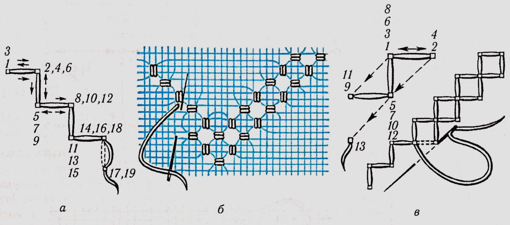
Рис. 88.Зерновий вивід
Зерновий вивід з прямим переходом робочої нитки (рис. 88, а) починають зліва направо горизонтальним стібком 1–2 і виводять голку зі споду справа наліво на початок стібка (2–3), стягуючи тканину. Другий стібок 3–4 кладуть поверх першого і вколюють голку на лицьовий бік униз по вертикалі (4–5).
Роблять вертикальний стібок 5–6–7 і вколюють голку вправо на довжину стібка 7–8. Зверху зліва направо кладуть стібок 9–10 і виколюють голку вниз по вертикалі (10–11). У такій послідовності вишивають потрібну кількість стібків верхнього ряду. Нижній ряд дірочкового виводу вишивають за тими самими правилами зі стібків, покладених паралельно стібкам верхнього ряду, повернувши шитво або починаючи роботу знову, тобто спускаючись згори вниз. За цього способу вишивка на зворотному боці повторює вишивку лицьового боку.
Зерновий вивід шиють і з навкісним переходом робочої нитки зі споду (рис. 88, б, в) також за два ходи. Починають роботу справа наліво вниз. На початку узору закріплюють робочу нитку (1) і роблять перший горизонтальний двосторонній стібок 1–2–3, міцно притягуючи нитку. Зверху кладуть другий стібок 3–4 і виколюють голку зі споду вниз по діагоналі справа наліво під початком першого стібка (4–5).
Перший вертикальний двосторонній стібок 5–6–7 кладуть знизу вгору й згори вниз. Повертаючись знизу вгору, кладуть другий стібок 7–8 і вколюють голку знову зі споду вниз по діагоналі на відстані одного горизонтального стібка (8–9).Другий подвійний горизонтальний стібок 9–10–11–12 кладуть зліва направо і виводять голку вниз по діагоналі на лицьовий бік під початком другого горизонтального стібка (12–13). Так продовжують шити перший ряд зернового виводу до кінця узору.
Другий ряд можна почати з кінця першого ряду зліва направо, створюючи квадрати, або знову з правого боку під першим рядом. На лівому боці зиґзаґ із прямих стібків доповнюють навкісні.
У стародавніх вишивках трапляється техніка зернового виводу, зроблена з виворотного боку на лицьовий.
Затягуванням у вигляді смужок-протяганок (рис. 89) із квадратів (панка) та трикутників (чеська панка) доповнювали вишивки лічильної гладі та інших швів.
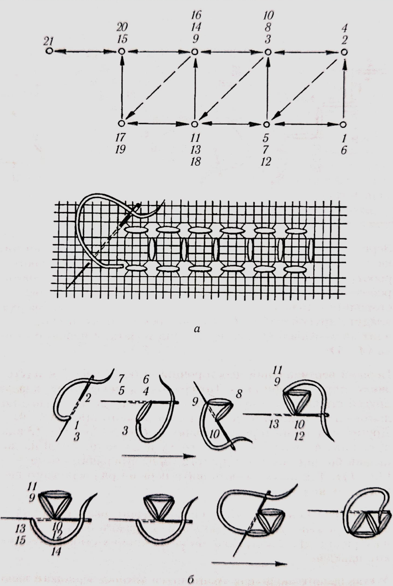
Рис. 89.Затягування смужок тканини:
а - квадратиками (панка); б - трикутниками (чеська панка)
Контрольні питання:
- Які види ажурних швів ви знаєте?
- Охарактеризуйте технологічну послідовність виконання вирізування.
- Яким чином утворюються стягувальні шви? На яких тканинах вони виконуються?
- Охарактеризуйте послідовність виконання ажурної вишивки цирки.